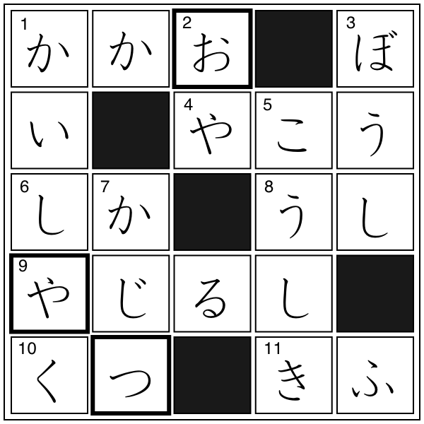

クロスワード
解答
クロスワード

【→
問題
〔
PDFファイル
〕
】
太枠の文字を組み合わせてできる単語
おやつ
▼
おつや（お通夜）
※
▼
は１級相当以上の単語
例文
今日のおやつはケーキです。
今日の夜、
▼
親族だけで
▼
お通夜をするそうだ。
※
▼
は１級相当以上の単語
単語リスト
語(読み)
漢字／原語
分類
発音
中文意思
▼
は１級相当の単語と漢字、
▽
は１級リスト外の漢字を示す
かいしゃく
解釈
-スル
1
おや
親
2
ぼうし
帽子
0
こうしき
公式
0
かじつ
果実
1
▼
カカオ
cacao
植物
外来語
1
やこう
夜行
0
しか
▽
鹿
動物
0
うし
牛
動物
0
やじるし
矢印
2
くつ
靴
2/1
きふ
寄付
-スル
1
おやつ
お八つ
2
ページの先頭へ↑
←ひとつ前に戻る
目次へ
トップページへ